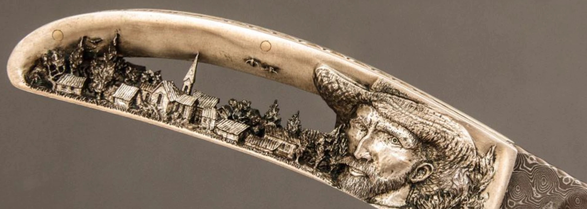

La micro-sculpture est un art séculaire qui a pris des formes variées selon les régions du monde et les époques, ayant trouvé à Genève un nouveau souffle. Notre association œuvre à préserver, promouvoir et faire vivre ce savoir-faire.

La micro-sculpture est un art séculaire qui a pris des formes variées selon les régions du monde et les époques. À Genève, ses origines remontent au XVIIIᵉ siècle, lorsque les métiers de la décoration horlogère occupaient une place importante au sein de la Fabrique. Plus récemment, le maître coutelier Charles Roulin lui a donné un nouvel essor, en développant au cours des quatre dernières décennies une signature artistique propre à Genève, notamment à travers la création de couteaux d'exception.
Lames, manches et platines sculptés : paysages, scènes animalières et portraits, à l'échelle du millimètre.
Un savoir-faire déjà validé par les instances qui labellisent le geste et le haut artisanat.
Après avoir été mis à l'honneur à travers le monde par Charles Roulin pendant plus de quarante ans, l'art de la micro-sculpture continue d'être présenté lors de salons de coutellerie, d'horlogerie et d'autres manifestations dédiées aux métiers d'art.
L'âge avancé de Charles Roulin soulève aujourd'hui une question essentielle : en tant que principal dépositaire et représentant de cet art, il incarne un savoir-faire unique et un pan du patrimoine artisanal genevois dont la transmission devient urgente. Sans soutien structuré, c'est cet art lui-même qui risque de disparaître : faute de moyens pour financer déplacements, expositions et actions de sensibilisation, il perd les occasions de se faire connaître et de se transmettre. L'association a pour but de donner à cet art les moyens de vivre et de se perpétuer.
« Association pour la préservation et la promotion du savoir-faire de micro-sculpture », à but non lucratif.
Défense d'un patrimoine
Défendre et soutenir un patrimoine artisanal et local en danger de disparition.
Visibilité
La visibilité est mère de pléthore de vertus. Financement des déplacements, du matériel et des expositions.
Transmission
Un savoir-faire ne vit que s'il est transmis. Organisation de workshops et opérations de sensibilisation.
Nous tenons à rendre hommage à feu Charles Roulin, maître coutelier genevois et précurseur de la micro-sculpture telle qu'elle vit aujourd'hui à Genève. Pendant plus de quarante ans, il a fait de la lame et du manche de ses couteaux de véritables scènes miniatures, et développé une signature artistique reconnaissable entre toutes. Il a porté cet art dans les salons et les expositions du monde entier, avec une passion qui nous inspire. Si ce savoir-faire existe encore, c'est d'abord grâce à lui : notre association s'engage à prolonger son œuvre, en le préservant et en le transmettant.
Fondations, institutions et mécènes : contactez-nous pour échanger sur un partenariat ou un soutien financier.